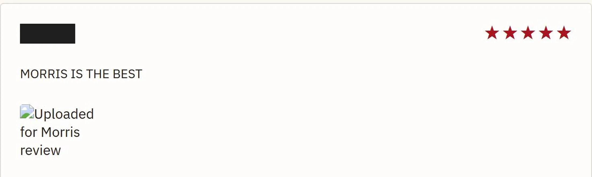
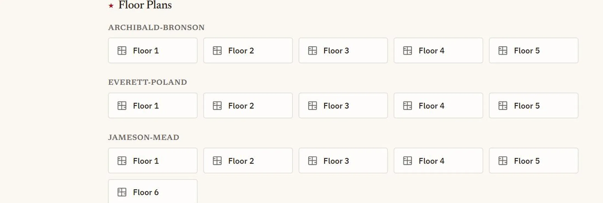
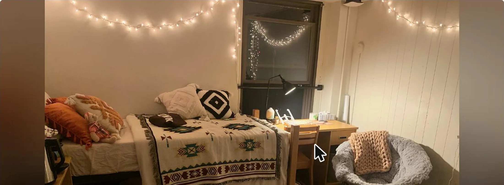
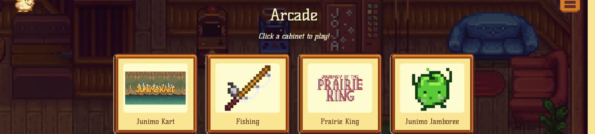

5 stars
The rating and the words are one submission; the site lays them out at opposite ends of the card.

brown.edu only
The whole gate, and the reason a review here is worth more than one anywhere else.

one group per building
Archibald-Bronson, then Everett-Poland. A flat list would run these together.

the same photo
Blurred and darkened to fill the frame, so a tall photo keeps its top and its bottom.

the game's own heart
A friendship sprite lifted from the game, not an emoji standing in for one.

four cabinets
One canvas each, one loop each, and no engine under any of them.